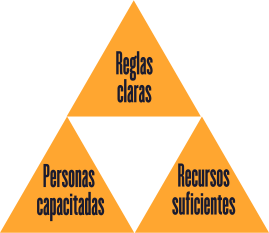

CAPACIDAD
Se necesitan:

Por ejemplo, actualmente ya hay leyes
pero no es suficiente, faltan:
Reglamentos, lineamientos, códigos...
Ya hay personas contratadas pero
no conocen las reglas
DETECTAR
lo siguiente tiene que funcionar bien:
- DENUNCIA
- AUDITORÍA
- TRANSPARENCIA
DENUNCIA
Recordemos que solo
9de cada 100
DELITOS
COMETIDOS
SE DENUNCIAN
¿Por qué tan pocos?
Porque el sistema de denuncia
Por lo tanto, quien denuncia se pone en peligro.Y si hay peligro menos ganas dan de
DENUNCIAR
Si queremos aumentar este
2% de casos resueltos, tiene que haber
más denuncias, y para que haya más denuncias tienen que ser
ANÓNIMAS Y SEGURAS
¡Se tiene que proteger a las personas
DENUNCIANTES primero!
AUDITORIA
(revisar irregularidades)
Hay quienes se dedican a revisar el trabajo de otras partes de gobierno:
- Sindicaturas
- Órganos Internos de Control
- Secretaría de la Función Pública
- Auditoría Superior del Estado
- Auditoría Superior de la Federación
Parte del trabajo de estos actores es detectar posibles irregularidades, pero NO SE COORDINAN entre sí y en ocasiones revisan lo mismo y no se comunican. Esto representa un gasto innecesario de recursos e ineficiencia en su trabajo. Otro grave
problema es que la información que generan
NO ES PÚBLICA
TRANSPARENCIA
Si no se sabe en qué están trabajando los entes encargados de detectar, entonces ni se coordinan ni hay posibilidades de que las personas o sociedad civil puedan apoyar haciendo
CONTRALORÍA SOCIAL
La corrupción no la va poder eliminar
el Estado por sí solo, se necesita
el trabajo de la mayoría
Una vez que se DETECTAN
posibles casos de corrupción,
ahora sí se puede realizar una:
INVESTIGACIÓN
CORRUPCIÓN

ADMINISTRATIVA
Investigada por:
S.F.P. / OICs / C. Judicatura / Auditoría Superior
En 2019 la SFP recibió 210 denuncias de las cuales en NINGÚN caso se avanzó a la siguiente etapa.

PENAL
Investigada por: Fiscalía Especializada Anticorrupción
De las cuales solamente SE HAN RECIBIDO 36 denuncias el año pasado, y de esas 2 de cada 5 son desechadas.
Para ninguna de las dos vías se sabe el tiempo que dura en investigarse un caso.
Si yo denuncio, no sé cuándo me darían respuesta.
por ejemplo:
El Comité Ciudadano Anticorrupción, denunció un presunto caso de corrupción y lleva más de:
el problema es que en ese caso el tiempo límite para actuar es de
3 años.
Si no, se pierde para siempre.
Si al Comité Ciudadano Anticorrupción
NO LE HACEN CASO
¿qué le espera a las personas comunes?
Sin todos estos pasos anteriores, no llegaremos al paso más importante para reducir la corrupción, que es la: